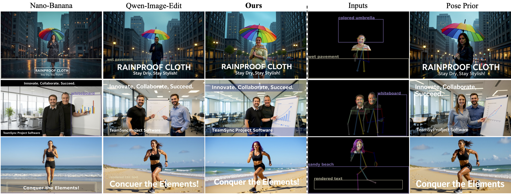
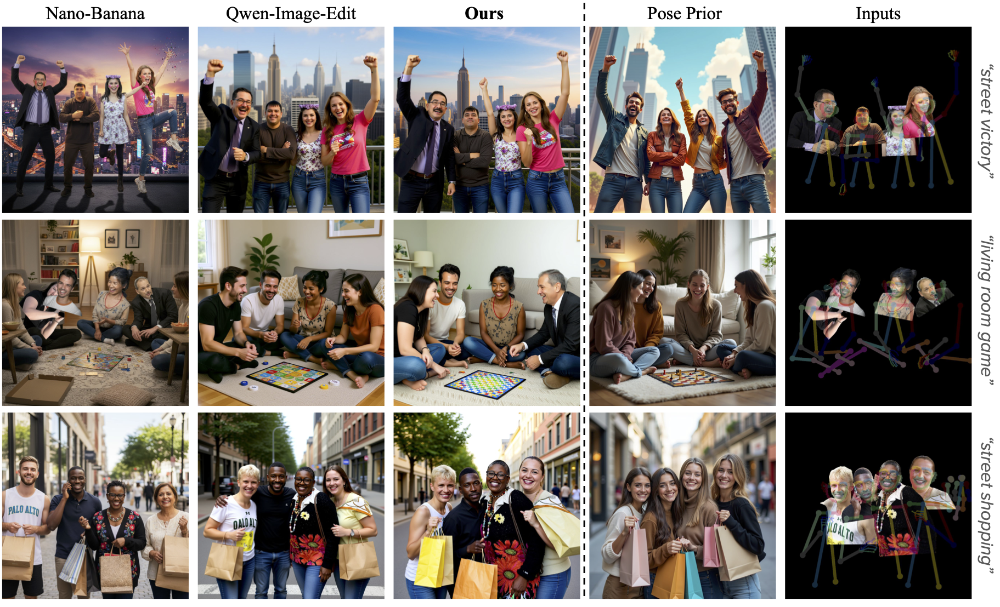
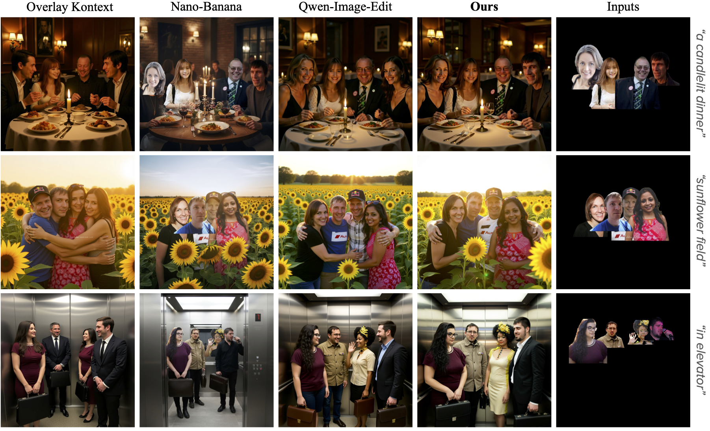
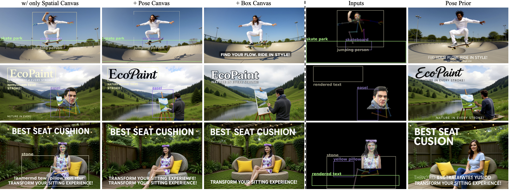
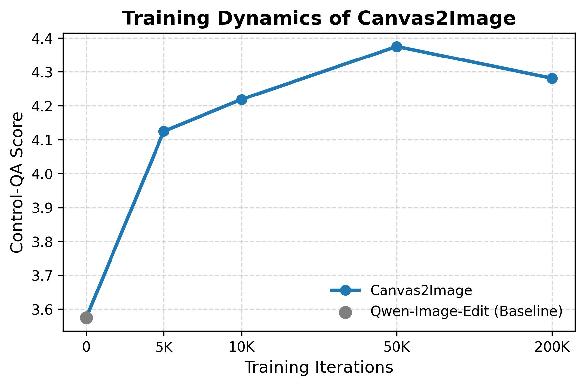
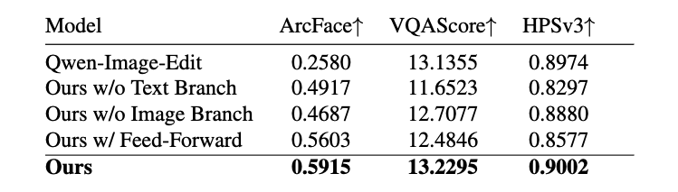

While modern diffusion models excel at generating high-quality and diverse images, they still struggle with high-fidelity compositional and multimodal control. We introduce Canvas2Image, a unified framework that consolidates these heterogeneous controls into a single canvas interface. Our key insight is to encode diverse control signals, including subject references, bounding boxes, and pose skeletons, into a single composite canvas image that the model can directly interpret for integrated visual-spatial reasoning.
Canvas2Image enables compositional control through a unified Multi-Task Canvas framework.
🎬 User Interface Demo
Watch the Canvas2Image user interface in action. See how our unified canvas framework enables intuitive control over compositional image generation with multiple subjects, poses, and spatial layouts.
Demonstration of the Canvas2Image interface showing compositional control and generation workflow.
🎨 Unified Interface
🔄 Multi-Task Training
✨ Emergent Generalization
🏆 State-of-the-Art Fidelity
Methodology
The core of our approach is the Multi-Task Canvas, a unified RGB interface that consolidates heterogeneous control signals (spatial placement, pose guidance, box layout) into a single representation. During training, we sample single-task canvases where each example focuses on one control modality, allowing the model to learn individual controls deeply while naturally discovering relationships between them. At inference, users can freely combine multiple control modalities, a capability never explicitly supervised, enabling seamless integration of identities, poses, and spatial layouts in complex arrangements.
Framework Overview: (a) Training on single-task canvases (Spatial, Pose, Box). (b) Inference: composing multiple controls simultaneously for complex multi-subject generation.
🔬 Comparisons with State-of-the-Art
We compare Canvas2Image against state-of-the-art methods across various challenging scenarios. Our unified canvas approach enables superior compositional control while maintaining identity fidelity and precise spatial placement.

Canvas2Image accurately handles identity + pose + layout boxes simultaneously, where baselines often fail.
Compositional generation combining subject identities with specific objects in various contexts.

Four-person composition with pose control. Canvas2Image maintains distinct identities while following pose constraints.
Qualitative comparison with baseline methods on layout-guided composition.

Multi-subject generation comparison. Unlike baselines that blend faces in group shots, Canvas2Image maintains distinct identities.
✨ Applications
Canvas2Image enables a wide range of compositional generation applications, from single-person pose control to complex multi-subject compositions with background integration.
Seamless integration of subjects into specified backgrounds while maintaining identity and pose control.
Two-person pose control maintaining distinct identities while following complex skeletal constraints.
Precise single-person pose control with identity preservation across diverse scenarios and poses.
🔬 Ablation Studies
We conduct comprehensive ablation studies to validate our design choices and demonstrate the effectiveness of our unified canvas approach.

We systematically ablate each control modality to demonstrate a key property of our framework: as each control is added during training, the model learns to handle them jointly together. Starting with identity control alone, progressively adding pose and spatial layout controls reveals that the model naturally learns to compose these modalities at inference time—even though they were trained separately on single-task canvases. This emergent compositional capability validates that our unified canvas approach enables true multi-modal understanding rather than isolated control execution.

The Control-QA curve shows rapid improvement up to 50K iterations where convergence is largely achieved. We continue training to 200K iterations to refine local details and improve robustness, using this checkpoint for all subsequent ablations.

We ablate key architectural components to validate our design choices. Removing the text branch significantly degrades identity preservation, while removing the image branch impacts both control adherence and overall quality. Using a simple feed-forward architecture instead of our design reduces performance across all metrics. Our full model achieves the best balance, demonstrating that each component contributes essential functionality for high-fidelity compositional generation.
🎓 BibTeX
@article{dalva2025canvas2image,
title={Canvas2Image: Compositional Image Generation with Multimodal Controls},
author={Dalva, Yusuf and Qian, Guocheng Gordon and Goldenberg, Maya and
Chen, Tsai-Shien and Aberman, Kfir and Tulyakov, Sergey and
Yanardag, Pinar and Wang, Kuan-Chieh Jackson},
journal={arXiv preprint},
year={2025}
}